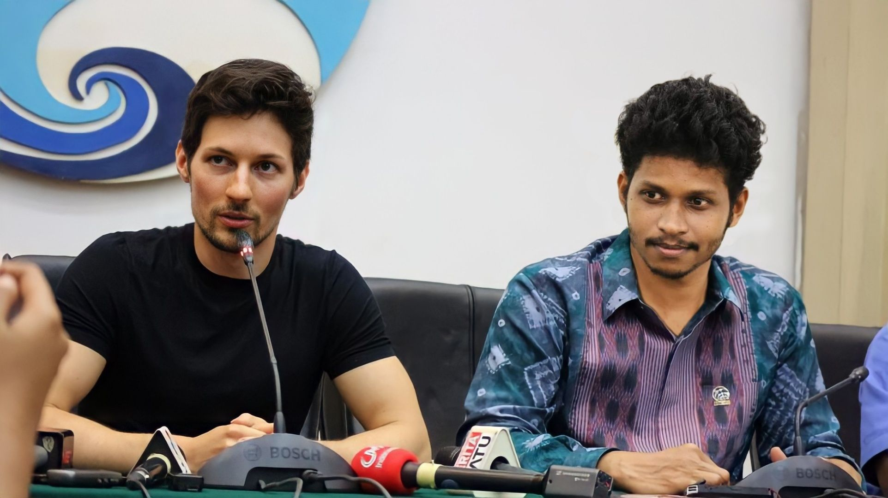

ഒരു ഏഴെട്ടു കൊല്ലം മുമ്പാണ്...
മ്മടെ ഉറ്റ സുഹൃത്ത് കൂടിയായ ഡുരോവ്, അവൻ അന്ന് റഷ്യയിലാണ്. ഓന് പാവക്കാ ജ്യൂസ് ഭയങ്കര ഇഷ്ടം ആയോണ്ട് ഞാൻ അവനെ പാവൽ ഡുരോവേ പാവൽ ഡുരോവേ എന്നാണ് കളിയാക്കി വിളിച്ചിരുന്നത്.
2013 ജൂണിൽ ആണെന്നാണ് ഓർമ്മ.
അന്നവൻ എനിക്ക് വാട്സാപ്പിൽ ഒരു വോയ്സ് മെസ്സേജ് അയച്ചിരുന്നു; "ദീപക്കേ, അളിയാ... ഞാനൊരു ആപ്പ് ഉണ്ടാക്കീട്ടുണ്ടടാ. എനിക്ക് അതൊന്ന് ലോഞ്ച് ചെയ്യണം. നിന്റെ കുറച്ചു ഹെല്പ് വേണം" എന്ന്.
ഞാൻ അപ്പൊ തന്നെ അന്നത്തെ ആപ്പിൾ CEO ആയിരുന്ന ടിം കുക്കിനെ വിളിച്ചു കാര്യം പറഞ്ഞു. ടിം ആളൊരു നല്ല കുക്കാണ്. ആളുടെ പടവലങ്ങാത്തോരൻ ഒക്കെ കിടു ആയിരുന്നു. തോരനെ പൊക്കി രണ്ട് ഡയലോഗ് അടിച്ചപ്പോ പുള്ളി അതിലങ്ങു ഫ്ലാറ്റ് ആയി. നീ ആപ്പിങ്ങു തന്നിട്ട് ലോഞ്ച് ഡേറ്റ് പറ, നമുക്ക് സെറ്റാക്കാം എന്നും പറഞ്ഞാണ് ഫോൺ കട്ടാക്കിയത്.
ഈ സന്തോഷവാർത്ത അപ്പൊ തന്നെ ഞാൻ പാവലിനെ വിളിച്ചു പറഞ്ഞു. അവൻ ആപ്പ് അയച്ചു തന്നു. പോരാഞ്ഞിട്ട് അവന് ഒരേ നിർബന്ധം... ലോഞ്ച് ചെയ്യുവാണേൽ അത് ദീപക്കിന്റെ പിറന്നാളിന് തന്നെ വേണം എന്ന്.
കൂട്ടുകാരൻ ആയിപ്പോയില്ലേ... ഞാൻ പിന്നെ എതിർത്തൊന്നും പറഞ്ഞില്ല.
അങ്ങനെ 2013 ആഗസ്ത് 14 ന് പാവലും ഞാനും കൂടി ടെലഗ്രാം അങ്ങു ലോഞ്ച് ചെയ്തു. എന്റെ birthday കേക്കും മുറിച്ച് ടിം കുക്ക് ഉണ്ടാക്കിയ പാവക്കാപ്പായസവും കുടിച്ചാണ് അന്ന് ഞങ്ങൾ പിരിഞ്ഞത്.
എല്ലാം ഇന്നലെ കഴിഞ്ഞ പോലെ ❤️
ഇനി ആരും ടെലഗ്രാമും ആയിട്ട് എനിക്കുള്ള ബന്ധം ചോദിച്ചേക്കരുത് 😌
DeOn
കൂടുതൽ വായിക്കാം...
• ടെലഗ്രാം complicated ആണോ?
[ Add a comment to this post ]